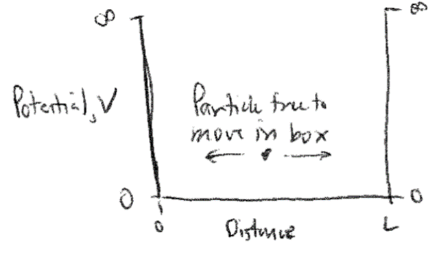
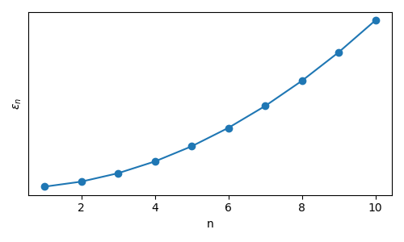

Overview#
Additional Readings for the Enthusiast#
Chandler [1], Chapter 1
Goals and questions for today’s lecture#
Recap fundamental topics that inform our study of statistical mechanics and thermodynamics
What are the different approaches for describing matter? How do they differ?
What is up and down?#
A sign convention is a general rule to determine what is positive and negative in contexts where, putatively, up and down are community-defined. In thermodynamics, we assume that when energy enters a system, its sign is positive (and conversely, when energy leaves a system, its sign is negative). When work is done on the system, its sign is positive, whereas when work is done by the system, its sign is negative.
Three descriptions of matter#
Broadly, we can describe a system and the matter that comprises it using three different approaches: i) thermodynamics, ii) statistical mechanics, and iii) quantum mechanics. This class will largely focus on the former two subjects, although some principles from quantum mechanics will occasionally be referenced. We will first discuss each complementary description of matter and provide some insight into the goals of this class.
Thermodynamics#
Thermodynamics studies the macroscopic properties of systems at equilibrium. Classical thermodynamics does not require knowledge of the microscopic details of a system; for example, we might know that a box contains some amount of gas, but thermodynamic properties do not depend on knowledge of the precise positions of gas molecules. Thermodynamics provides a framework that relates macroscopic properties, and their changes, to one another. However, thermodynamic relations alone cannot predict the magnitude of these changes, which require knowledge on material parameters that must be empirically determined. Finally, thermodynamics is based on a set of postulates which are empirically known to hold but cannot be rigorously proven. Here is an example of a thermodynamic relation:
Equation (1) relates the difference in the heat capacity at constant pressure (\(C_P\)) and the heat capacity at constant volume (\(C_V\)) to the pressure (\(P\)), partial derivative of the internal energy \(E\) with respect to volume at constant temperature, and partial derivative of the volume with respect to temperature (\(T\)) at constant pressure. No microscopic information is provided and all quantities are expressed in terms of differential changes in system properties; the actual values of these partial derivatives and materials parameters must be measured experimentally (or predicted from knowledge of the molecular properties of a system).
Statistical mechanics#
The weakness - and arguably, power - of thermodynamics is that it provides no molecular, microscopic description of the system of consideration, but rather provides universal equations relating measurable macroscopic properties. Statistical mechanics takes the opposite approach by beginning with a microscopic description of a system then deriving macroscopic properties. Using statistical mechanics, we seek to derive the macroscopic properties of systems at or near equilibrium from a statistical description of the enormous (\(\approx 10^{20}\)) number of particles in a typical macroscopic system. Thermodynamics and statistical mechanics thus treat the same systems, but the exact, macroscopic relations provided by thermodynamics can now be complemented by system-specific quantities calculated from molecular details. In effect, statistical mechanics answers the question of why specific systems behave in the way that they do - that is, what accounts for the specific values of macroscopic quantities. This connection between thermodynamics and statistical mechanics will be highlighted throughout the course. Here are examples of equations that we will see frequently throughout this course:
Equation (2) is the canonical partition function, one of the key equations that we will discuss. In this equation, \(E_i\) is the energy of a particular microstate - or a specific configuration of all particles - of the system and the summation accounts for all possible microstates of the system. The number of microstates can be enormously large. The partition function illustrates that statistical mechanics deals with particle-specific quantities (i.e., energies), but takes into account the incredibly large number of particles and possible particle positions that contribute to the macroscopic behavior of a system. Equation (3) illustrates the connection between thermodynamics and statistical mechanics by writing the Helmholtz free energy - a macroscopic system parameter - as a function of the canonical partition function - a microscopic system parameter. This connection between thermodynamics and statistical quantities will be a major feature of our studies.
Quantum mechanics#
While statistical mechanics provides a microscopic framework that thermodynamics does not, this framework still depends on parameters that describe the behavior and energetics of the atoms and molecules, such as particle-specific energy levels (\(E_i\) in the partition function above). In principle, this information can be obtained from quantum mechanics. Quantum mechanics defines the set of possible states for a specific particle, and relative energy levels of these states, for a single particle; however, it provides no information on the likelihood that a particle is found in any such state.
For example, consider an ideal particle confined within a one-dimensional box with length \(L\) by two walls. We’ll say that the potential energy of the particle is zero for any position within the box and infinite elsewhere.

When the box is sufficiently small, quantum mechanics gives an understanding of where the particle could be found in this box, because not all positions or energies are equally likely. QM provides the following description of the energy levels accessible to a single particle that has a single translational degree of freedom within this box:
Here, \(n\) is a subscript denoting each individual microstate accessible to the single particle system, \(\epsilon\) is the corresponding energy, \(h\) is Planck’s constant, \(m\) is the mass of the particle, and \(L\) is the size of the box. We can plot these discrete energy levels (which depend quadratically on \(n\)) as follows:

The key point to illustrate is that quantum mechanics provides this set of states and energies which can be used to describe the molecular properties of a single molecule, and then can be used in conjunction with tools from statistical mechanics to calculate macroscopic properties.
In this course, we will not use quantum mechanics to define the set of possible \(E_i\), but the connection is something to keep in mind.
To summarize,
Thermodynamics provides macroscopic relationships between the properties of a system but requires specific materials parameters as input.
Statistical mechanics can link macroscopic thermodynamic observables to the microscopic properties of a material but requires a description of system energies.
Quantum mechanics can provide the set of energies accessible to a system but cannot tell us the likelihood with which such energies are obtained.
In this course we will focus on the former two topics, but it is all three in conjunction that enable the analysis of real systems.